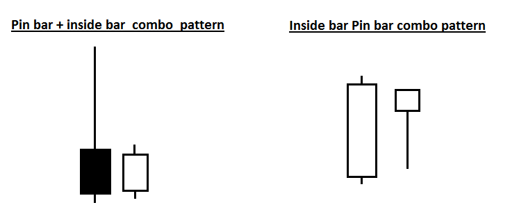
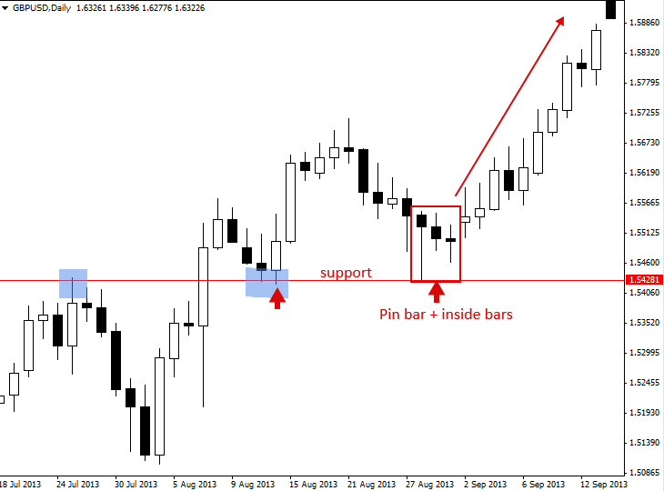
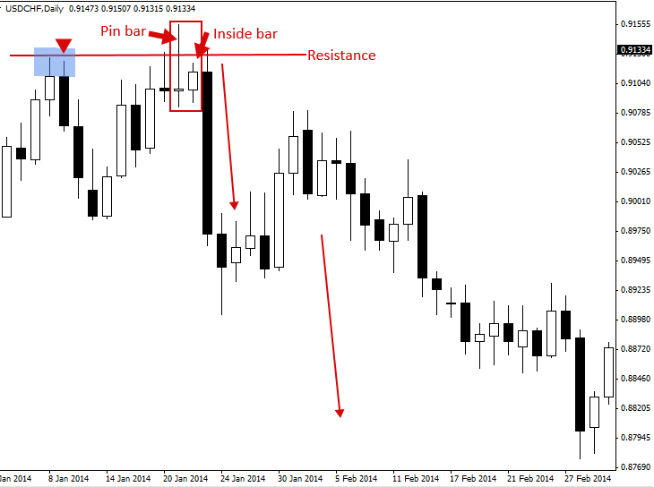
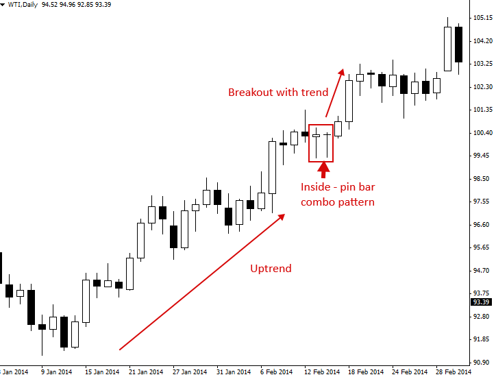
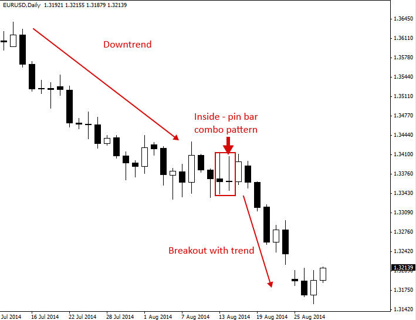

Pin Bar and Inside Bar Combo Trading Strategy
핀바와 인사이드바 콤보 패턴
핀 바는 가격 하락을 나타내며 잠재적인 반전이 임박했음을 나타내는 가격 움직임 전략입니다. 인사이드 바는 횡보를 나타내며 잠재적인 돌파가 임박했음을 나타내는 가격 움직임 전략입니다. 이 두 가지 신호가 결합되면 '핀 바 콤보' 패턴 또는 '인사이드 바 - 핀 바 콤보' 패턴이 형성됩니다.
핀바와 인사이드 바의 조합 패턴은 가장 강력한 가격 움직임 신호 중 하나입니다. 집중해서 학습해야 할 두 가지 주요 '콤보 패턴'이 있습니다.
1) 핀 바 + 인사이드 바 콤보는 핀의 코(핀 바의 실제 몸체) 쪽으로 작은 인사이드 바를 소모하는 핀 바로 구성됩니다.
2) 인사이드 핀 바 콤보 셋업은 간단히 말해, 인사이드 바이기도 한 핀 바입니다. 다시 말해, 아웃사이드 바 또는 마더 바의 범위 내에 있는 핀 바입니다.

핀 바 + 인사이드 바 콤보 패턴 거래 방법
핀바 인사이드 바 콤보 패턴을 찾을 때는 먼저 핀바만 있는 것을 찾습니다. 핀바 바로 뒤에 핀바의 고저 범위 내에 있는 인사이드 바가 있다면, 핀바 + 인사이드 바 콤보 패턴입니다. 위에서 언급했듯이, 인사이드 바가 핀바의 노즈(실제 바디) 근처에 있는 것이 이상적입니다.
이 튜토리얼에서 다루는 두 가지 콤보 패턴 중에서 핀 바 + 인사이드 바 콤보가 가장 강력하며, 풀백에서 주요 수준으로의 일간 차트 거래나 4시간 또는 일간 차트의 추세 시장에서 돌파 플레이로 거래하기에 이상적인 설정입니다.
몇 가지 예를 살펴보겠습니다.
아래 차트 예시에서, 상승 추세 시장에서 지지선까지 하락한 후 형성된 핀바 인사이드 바 콤보 패턴의 좋은 예를 확인할 수 있습니다. 이러한 콤보 패턴은 핀바(50% 수준 근처)에서 더 나은 진입 기회를 제공하고, 인사이드 바 저점이나 주요 지지선 아래에서 '타이트한' 손절매를 할 수 있기 때문에 매우 강력합니다. 아래 예시처럼 핀바 다음에 인사이드 바가 나타나 인사이드 거나, 심지어 여러 개의 바가 나타나면 잠재적인 매매 진입 기회가 있을 수 있으므로 주의해야 합니다.

다음은 핀바와 인사이드 바 콤보 패턴의 또 다른 예시입니다. 이번에는 저항선에서 형성되어 해당 저항선을 허위로 돌파한 후 하락세를 촉발했기 때문에 반전 패턴에 가깝습니다. 이 콤보 패턴은 인사이드 바가 핀바의 꼬리까지 되돌려지는 시점에 진입하여 '타이트한' 진입을 유도했습니다. 손절매는 저항선 바로 위나 핀바의 고점 근처에 설정되었을 수 있습니다. 가격이 인사이드 바 아래로 하락하면서 극적인 매도세가 전개되는 것을 확인할 수 있습니다.

인사이드 핀 바 콤보 패턴 거래 방법
인사이드 핀 바는 이름 그대로, 핀 바가 인사이드 바 형태로 구성된 바입니다. 이러한 구성은 추세 시장과 일간 차트 시간대에서 가장 효과적인 것으로 보입니다.
아래 예시에서 인사이드 핀바 콤보 패턴이 고점을 돌파했고 형성되기 전에 강한 상승 추세가 있었음을 알 수 있습니다. 이후 가격이 모체봉, 이것이 추세 진입 시점이었음을 알 수 있습니다. 트레이더는 이와 같은 인사이드 핀바 콤보 패턴에서 모체봉 고점 바로 위에 '매수/매수' 포지션을 취할 수 있습니다. 이후 가격이 추세와 같은 방향으로 돌파하면, 현재 시장 모멘텀에 맞춰 매매에 진입하게 됩니다.

아래 차트는 좋은 인사이드 핀 바 콤보 패턴의 또 다른 예를 보여줍니다. 이번에는 추세가 하락 또는 '약세'였고, 가격이 며칠 동안 횡보하면서 아래 차트에서 볼 수 있는 약세 인사이드 핀 바 매도 신호가 형성되었습니다. 인사이드 핀 바 콤보는 추세 시장에서 '지속 패턴'으로 매우 효과적입니다. 지속 패턴은 추세가 기존 방향으로 계속 움직일 것임을 암시하는 패턴입니다. 가격이 이 인사이드 핀 바의 모봉 아래로 하락했을 때 발생한 공격적인 매도세에 주목하세요…

핀바와 인사이드바 콤보 패턴 트레이딩 팁
- 핀바 다음에 인사이드 바가 나타나는지 항상 주의하세요. 핀바 이후 하루 동안 인사이드 바 형태로 나타나는 것은 가격이 핀바 반전 신호 에서 공격적으로 벗어나기 전에 시장에 진입할 수 있는 마지막 기회입니다.
- 종종 핀 바 + 인사이드 바 콤보 설정에서 손절매를 인사이드 바 바로 위(또는 아래)에 배치할 수 있습니다. 이렇게 하면 약간 더 큰 포지션 규모로 거래할 수 있고 거래의 위험 대비 수익 시나리오가 개선됩니다.
- 추세가 있는 시장에서는 인사이드 핀 바 콤보 설정을 찾아보세요. 특히 눈에 띄게 강한 추세에서는 돌파/추세 지속 플레이로서 매우 신뢰할 수 있는 경향이 있습니다.
- 인사이드 핀 바 구성은 일간 차트 시간대에 가장 적합하고, 핀 바 + 인사이드 바 구성은 일간 및 4시간 차트 시간대 모두에 적합합니다.
https://priceaction.com/price-action-university/strategies/pin-bar-inside-bar-combo/